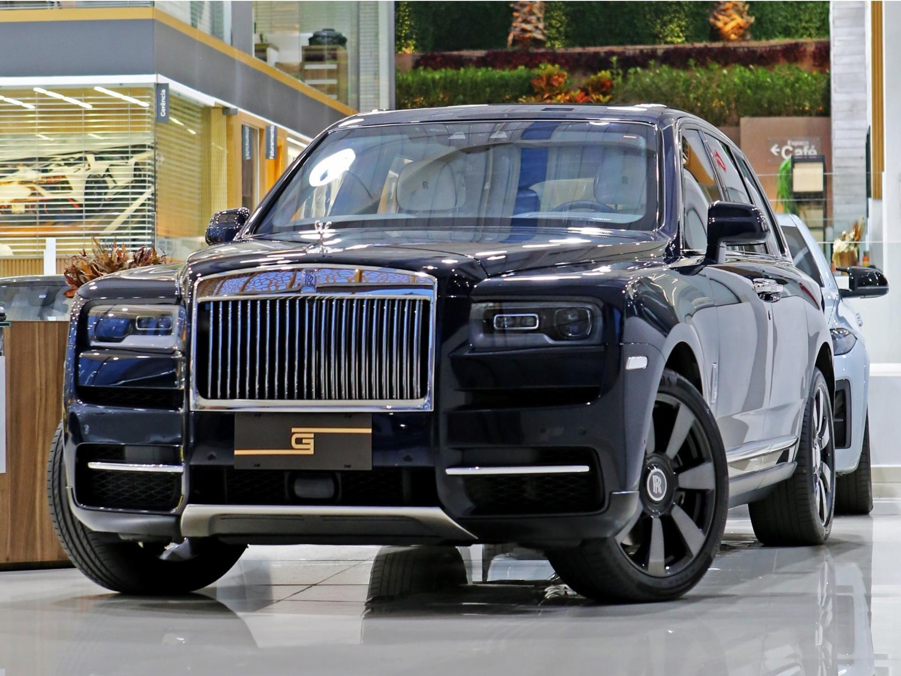
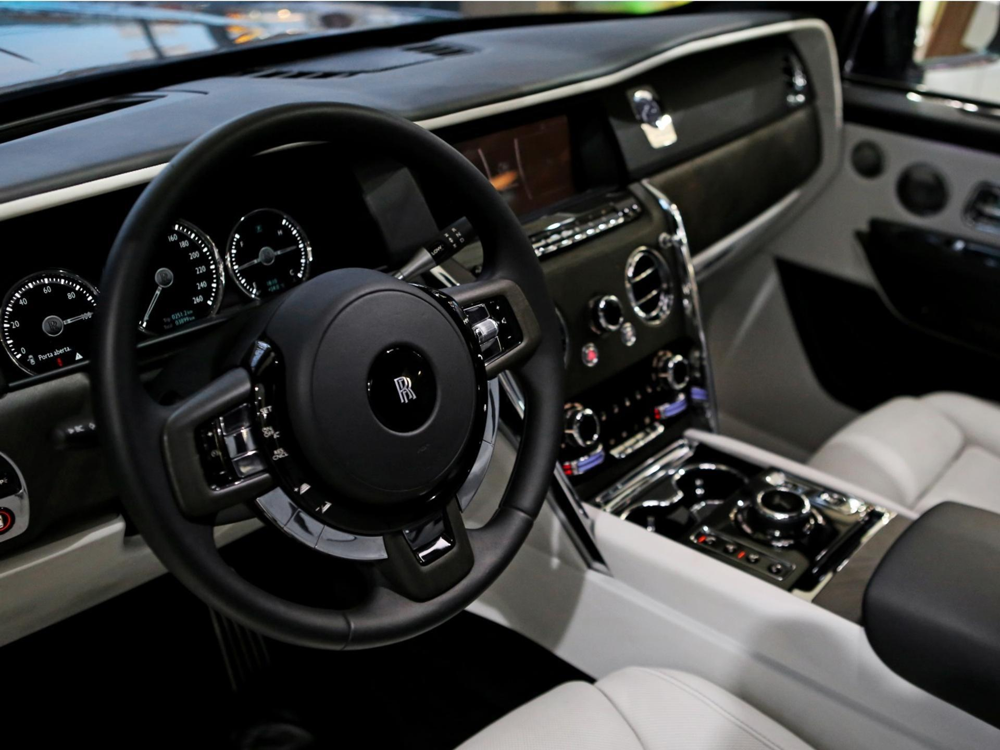
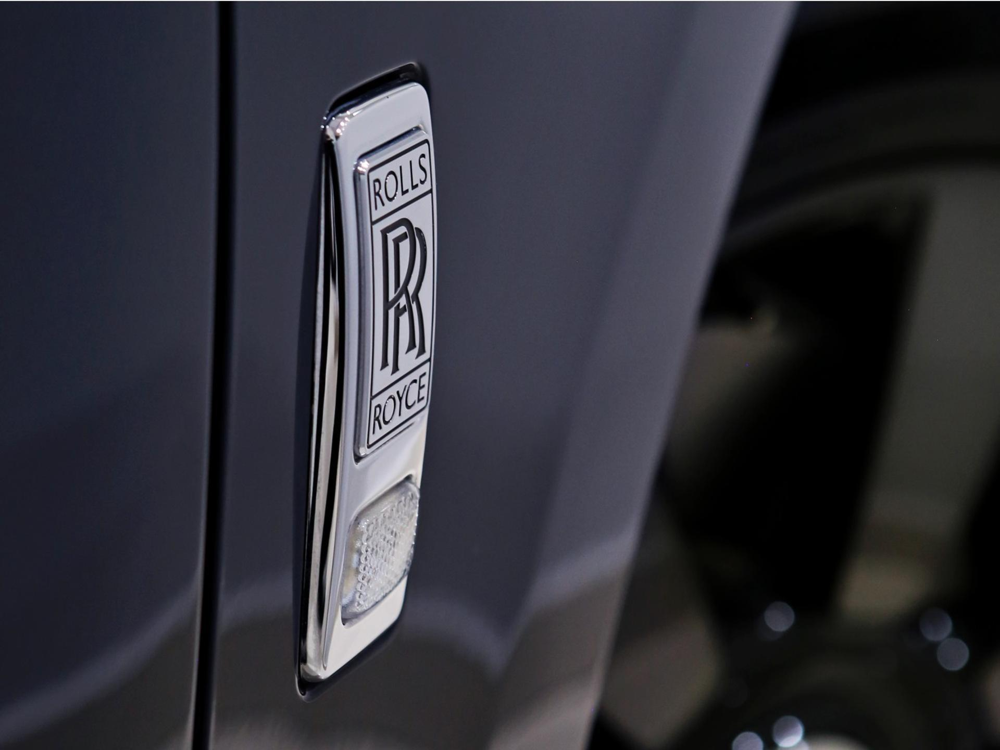
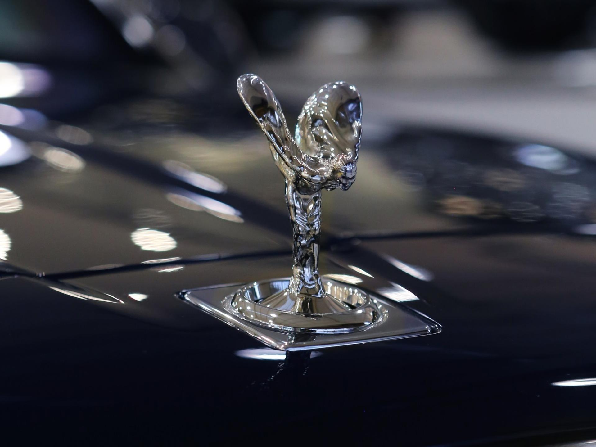
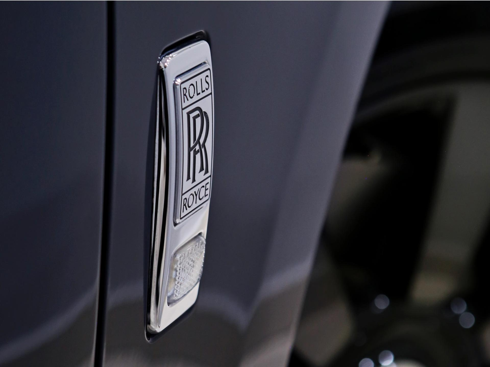
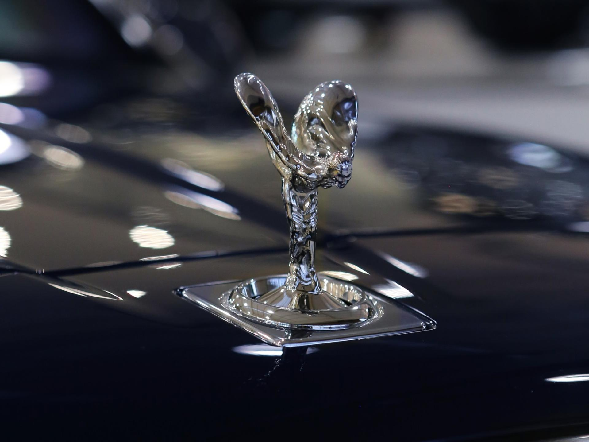
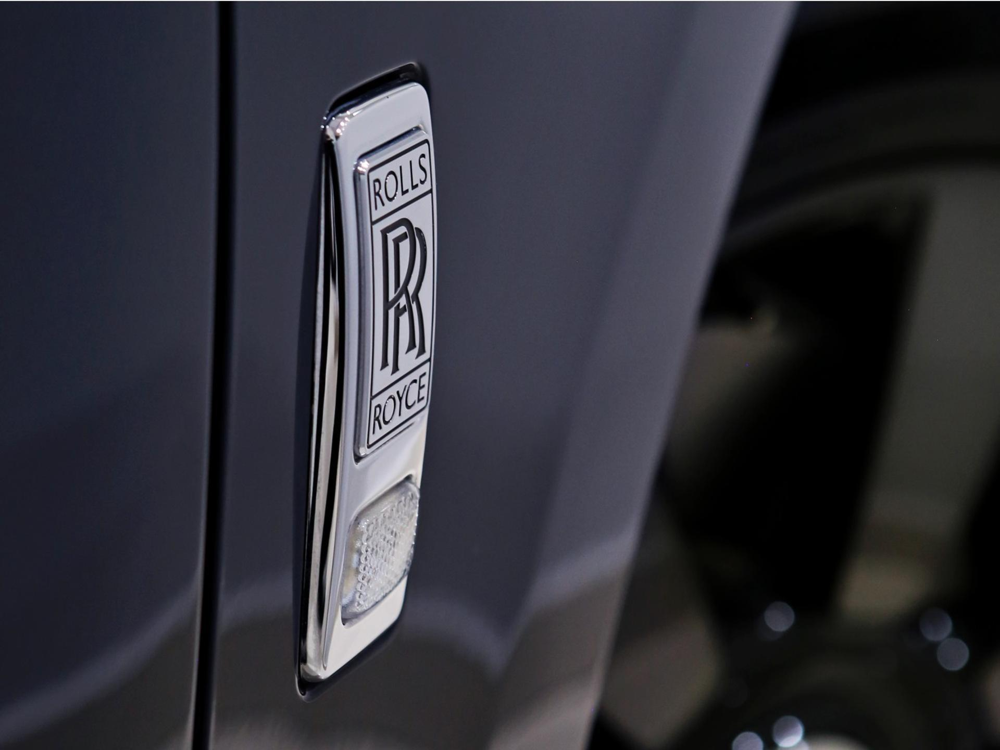
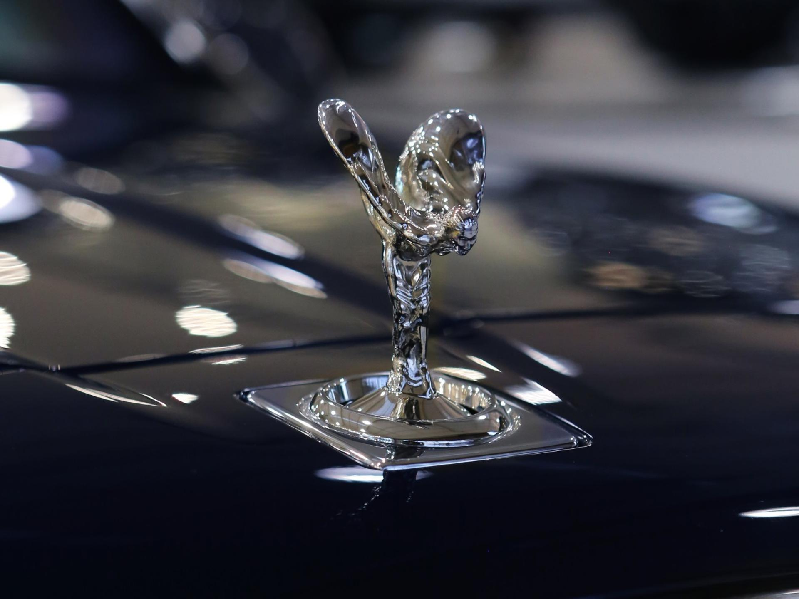

 






Rolls-Royce Cullinan
O Rolls-Royce Cullinan é o SUV mais luxuoso do mundo, combinando o máximo em conforto, sofisticação e potência. Equipado com um motor V12 6.75 biturbo que entrega 571 cavalos de potência, o Cullinan acelera de 0 a 100 km/h em apenas 5,2 segundos. Seu interior é um verdadeiro santuário de luxo, com acabamento artesanal em couro, madeira nobre e detalhes metálicos. O sistema de tração integral e a suspensão inteligente garantem uma experiência de condução incomparável, tanto na cidade quanto fora dela.
R$ 6.300.000,00